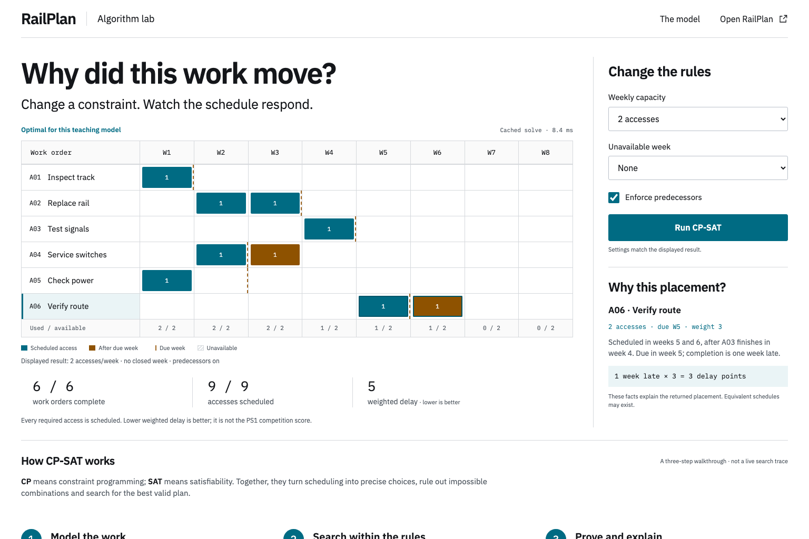
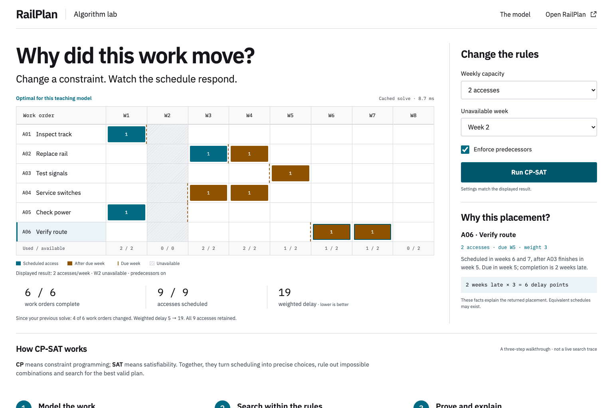
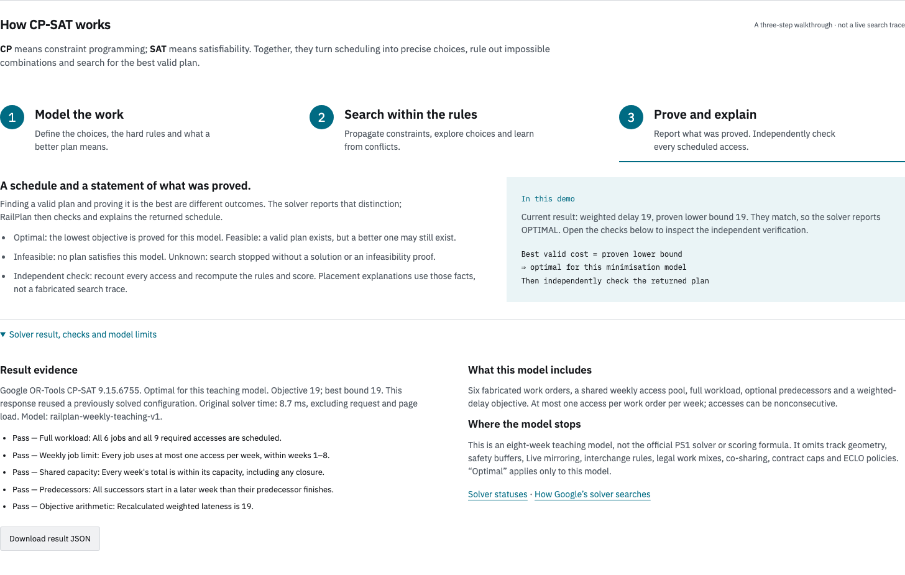

Model the work
48 yes-or-no placement variables. Schedule all nine accesses. Capacity, closures and enabled dependencies are hard rules. Minimise weighted lateness.
A look inside the algorithm
From work requests to a checked schedule, in three steps.
48 yes-or-no placement variables. Schedule all nine accesses. Capacity, closures and enabled dependencies are hard rules. Minimise weighted lateness.
Rule out impossible choices. Branch on what remains and learn from conflicts. Track the best schedule and a lower bound on cost.
Cost meets bound: optimum proved. A separate checker verifies the returned schedule. Inspect every job’s completion and penalty. FEASIBLE alone does not prove optimality.
The complete workload
Six maintenance jobs. Eight weeks. One checked schedule that retains every required access.
Default settings: two accesses per week, no closure, predecessor rules enabled.

A change you can explain
Close week two and solve again. The work stays; the timing and cost change.
Two accesses per open week. Predecessor rules stay enabled.

Evidence behind the answer
For the week-two closure, the best schedule meets the solver’s lower bound. No lower cost exists within this model.
OPTIMAL · SCOPE: THIS MODEL
A separate checker verifies the returned schedule. CP-SAT supplies the optimality result.
